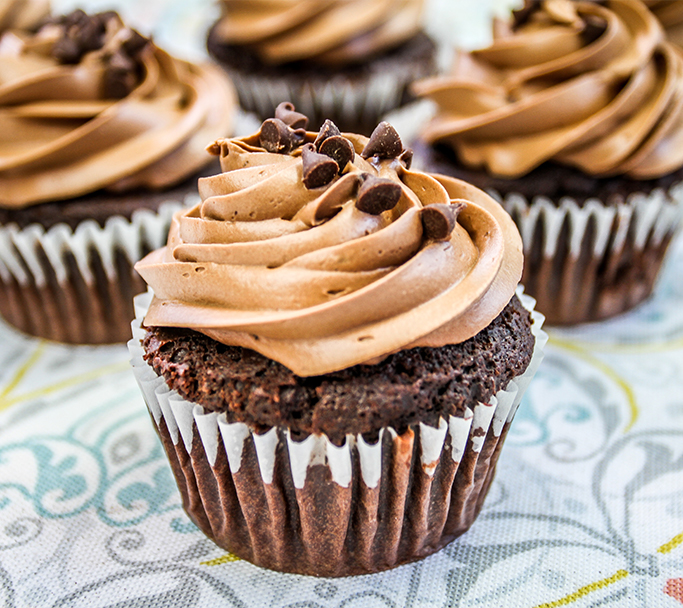

Design Challenge
Before beginning to design, one must figure out what they want to design.
For this project, we were challenged with redesigning the website of a local non-profit organization. We framed the design challenge and narrowed down our subject before beginning research.